class: center, middle .title[Creative Coding and Software Design 1] <br/><br/> .subtitle[Feeds, APIs, Node.js] <br/><br/><br/><br/><br/><br/> .date[Dec 2022] <br/><br/><br/> .note[Created with [Liminal](https://github.com/jonathanlilly/liminal) using [Remark.js](http://remarkjs.com/) + [Markdown](https://github.com/adam-p/markdown-here/wiki/Markdown-Cheatsheet) + [KaTeX](https://katex.org)] ??? Author: Grigore Burloiu, UNATC --- name: toc class: left # ★ Table of Contents ★ <!-- omit in toc --> 1. [Datafeed formats](#datafeed-formats) 2. [Online datasets and APIs](#online-datasets-and-apis) 3. [Twitter API](#twitter-api) 4. [Communication: socket.io](#communication-socketio) 5. [Deploying online](#deploying-online) <!-- Comment out the next slide if you don't want the Table of Contents link --> --- layout: true .toc[[★](#toc)] --- name: datafeed-formats # Datafeed formats CSV ~ [comma separated values](https://en.wikipedia.org/wiki/Comma-separated_values) XML ~ [extensible markup language](https://en.wikipedia.org/wiki/XML) JSON ~ [JavaScript object notation](https://www.json.org) --- ## CSV `data.csv` ```csv FF0000,00FF00,992200 red,green,brown ``` parsing in P5: ```java String[] stuff = loadStrings("data.csv"); color dataColor[] = new color[3]; // three apple colors String values[] = split(stuff[0], ','); // row 0 & delimiter: , for (int i = 0; i < 3; i++) { dataColor[i] = unhex("FF"+values[i]); } String[] dataName = ... ``` [CSV lint](https://csvlint.io/) --- ## XML `data.xml` ```xml <apples> <apple id="0" col="FF0000">red</apple> <apple id="1" col="00FF00">green</apple> </apples> ``` parsing in P5: ```java XML xmlFile = loadXML("data.xml"); XML[] children = xmlFile.getChildren("apple"); for (int i = 0; i < children.length; i++) { int id = children[i].getInt("id"); String colHex = children[i].getString("col"); String name = children[i].getContent(); } ``` [XML lint](https://xmllint.com/) --- ## Parsing XML from online APIs [parseXML()](https://processing.org/reference/parseXML_.html) ```java String response[] = loadStrings("http://api.openweathermap.org/data/2.5/forecast?id=524901&mode=xml&APPID=API-KEY"); XML xmlData = parseXML(response[1]); XML[] children = xmlData.getChildren("location"); for (int i = 0; i < children.length; i++) { int id = children[i].getInt("id"); String name = children[i].getContent(); println(id + ", " + name); } ``` --- ## JSON .left-column[ data.json ```json [{ "color": "FF0000", "name": "red" }, { "color": "00FF00", "name": "green" }] ``` parsing in P5: ] .right-column[ <iframe width="100%" height="300" src="https://www.youtube.com/embed/_NFkzw6oFtQ" title="YouTube video player" frameborder="0" allow="accelerometer; autoplay; clipboard-write; encrypted-media; gyroscope; picture-in-picture" allowfullscreen></iframe> ] <br/><br/><br/><br/><br/><br/><br/><br/><br/><br/> ```java JSONArray values = loadJSONArray("data.json"); for (int i = 0; i < values.size(); i++) { JSONObject apple = values.getJSONObject(i); String colHex = apple.getString("color"); String name = apple.getString("name"); } ``` [JSON lint](https://jsonlint.com/) --- name: online-datasets-and-apis # Online datasets and APIs [dataset search](https://toolbox.google.com/datasetsearch) @ Google [public APIs](https://github.com/public-apis/public-apis) list [small datasets](https://github.com/dariusk/corpora) repo - "interesting data for the creation of bots and similar stuff" [OpenWeather](https://openweathermap.org/current#current_XML) [Classic Datasets Archive](http://lib.stat.cmu.edu/datasets/) [Eurostat](http://ec.europa.eu/eurostat/web/sdmx-web-services/dynamic-visualisation) / [OECD](http://stats.oecd.org) / [INSSE](http://statistici.insse.ro/shop/?lang=ro) / [Numbeo](https://www.numbeo.com/common/apply_academic_api.jsp) [NASA](https://api.nasa.gov/) ([Open Data](https://open.nasa.gov/open-data/)) - [example](https://data.nasa.gov/Space-Science/Meteorite-Landings/gh4g-9sfh) more dataviz examples: [r/dataisbeautiful](https://www.reddit.com/r/dataisbeautiful/) ... --- name: twitter-api # Twitter API [tools and libraries](https://developer.twitter.com/en/docs/twitter-api/tools-and-libraries/) -- example app **nodejs** - access twitter API to get search results **nodejs** - run sentiment analysis on text **socket.io** - send data from nodejs to p5js **p5js** - visualise sentiment analysis results **heroku** - publish node+p5js app to web - many other options - python/flask + p5js, - standard js + p5js, - python + p5, - ... --- ## Getting started .right-column[ <iframe width="100%" height="300" src="https://www.youtube.com/embed/7-nX3YOC4OA" title="YouTube video player" frameborder="0" allow="accelerometer; autoplay; clipboard-write; encrypted-media; gyroscope; picture-in-picture" allowfullscreen></iframe> ] [apply for developer account](https://developer.twitter.com/en) - or join a [team](https://developer.twitter.com/en/portal/teams) [create new app](https://developer.twitter.com/en/portal/apps/new) [get Node.js](https://nodejs.org/en/) edit KEYS.js run: ```terminal npm install node app.js ``` --- ## Tools used [Search tweets](https://developer.twitter.com/en/docs/twitter-api/tweets/search/introduction) [Data dictionary](https://developer.twitter.com/en/docs/twitter-api/data-dictionary/introduction) https://www.npmjs.com/package/twitter-lite https://www.npmjs.com/package/ml-sentiment --- name: communication-socketio # Communication: socket.io [Introduction](https://socket.io/docs/v4/) [Get started (w/ Express)](https://socket.io/get-started/chat) [p5js, node, socket.io](https://github.com/processing/p5.js/wiki/p5.js,-node.js,-socket.io) guide @ p5.js  --- name: deploying-online # Deploying online .right-column[ <iframe width="100%" height="300" src="https://www.youtube.com/embed/DwWPunpypNA" title="YouTube video player" frameborder="0" allow="accelerometer; autoplay; clipboard-write; encrypted-media; gyroscope; picture-in-picture" allowfullscreen></iframe> ] [Heroku with Node.js](https://devcenter.heroku.com/articles/getting-started-with-nodejs) guide [Preparing your codebase](https://devcenter.heroku.com/articles/preparing-a-codebase-for-heroku-deployment) - [git init](https://www.atlassian.com/git/tutorials/setting-up-a-repository) -- store secrets & keys as env vars - (not posted to github!) - [dotenv](https://www.npmjs.com/package/dotenv) -- not using a server? - simply host your p5js [on github pages](https://thecodingtrain.com/Tutorials/9-additional-topics/9.13-github-pages-p5.html) for free